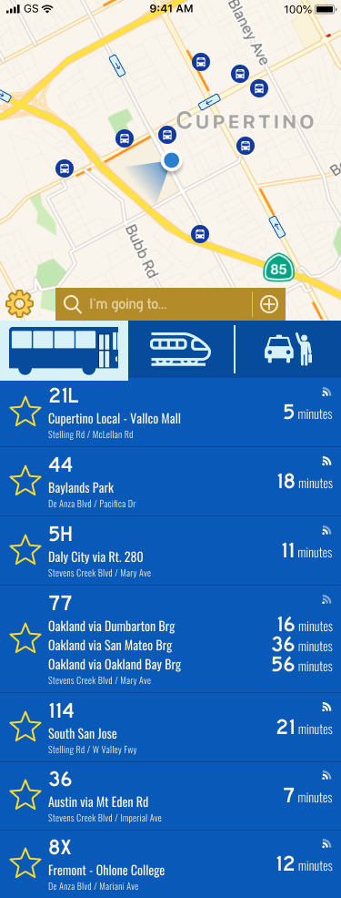
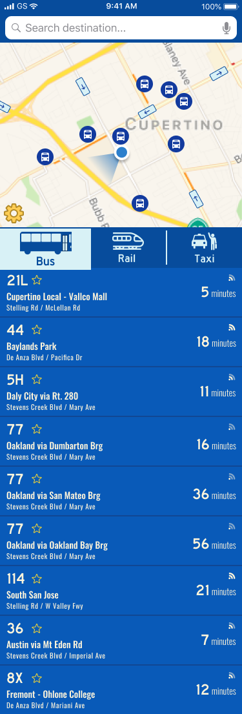

Never run for another bus again! With BusyBus, plan your commute with peace of mind. You'll be alerted when it's best to start walking to your nearest bus stop while also viewing real-time updates.
Jul 2019 - Aug 2019
Research & Discovery,
Info Architecture & Ideation,
Interactive Design & Testing,
Visual Design,
Frontend Development
Google Forms, Figma, Atom, Git/GitHub
Transit officials identified a problem they would like to solve. Due to expansion, numerous bus routes were recently added and many of those routes stop at the same bus stop. Riders want to know what the next arriving bus is and how much time they have to get to the bus stop. Riders and residents are frustrated and want to know where their bus is, when it arrives, and how long until it departs.
BusyBus was developed with the aim of providing residents and commuters with a technological solution that provides a more seamless and hassle-free public transportation experience. By combining basic design principles with an intuitive layout, BusyBus’ interface lets users know in real-time when their desired buses will arrive. Users will also be informed of which routes are inactive.
Through my survey of 32 people, I found that a majority of people do not use the bus as their primary mode of transportation (81.3%), while 18.8% reported that they do. Focusing primarily on bus riders, 50% use it daily while 50% use it a few times a week. The most cited reason for using the bus to get to work (100%). Other common reasons were for convenience, price, running errands, and being unable to drive (50% each). Most bus riders walk no more than 5 minutes from their homes to their stops (83.3%), but time spent actually waiting for the bus varies; 16.7% spend 0-5 minutes, 66.7% spend 6-15 minutes, and 16.7% spend 16-30 minutes waiting. This is where improvements can and must be made; the graph below shows what ways users' experience using public transportation apps can be enhanced:
Based on these findings, bus riders benefit from having real-time updates so they know when to expect buses, but would like to be able to see where their buses are, similar to how apps like Lyft and Uber show their rides on a map. Users also would like to know when to begin heading to their stops, and be notified of any changes in the expected time of their bus. This will reduce the time users have to spend actually waiting for their bus to arrive. In the event of any kind of signal failure, users would also like to have offline access to schedules and routes so they have some idea of when to begin moving. For added convenience, and because not all apps have this feature, adding an in-app payment option will attract more users.
Transit is a relatively new dedicated transportation service, providing local real-time route updates and bus stop locations. It is easy to see when local buses are coming, and the next time they will arrive. It plays with colors outside of its branding to distinguish different routes and transportation types (e.g. MTA subway lines). It is mobile-only, and only serves about 200 major cities and transit hubs worldwide, thereby restricting its usability.
Google Maps is the most widely recognized and used transportation planning service, since it is attached to the Google IP. It is also much more easily accessible wherever you are and on any device. While it does employ color to highlight selected routes, as well as transit iconography (e.g. MTA subway lines and bus routes), the interface itself is more monotone than other competitors. From a technical standpoint, the app also consumes more battery power, and Google has been scrutinized in the past over privacy concerns, harming public trust.
So, how can we measure success for BusyBus, taking competitors and user requirements into account? I created a list of 12 user stories that were most important in establishing a minimum viable product, including being able to see real-time updates, notifications or approaching buses, and adding items to a 'Favorites' list. From this list, I created a user flow that integrated as much as possible to test out general functionality.
Time to sketch and test! Using a templated worksheet, I sketched out three screens that follow my previously established user flow and performed usability testing on this paper prototype with three subjects. I also wanted to experiment with including other forms of transportation for users who may want to explore those options, similar to Google Maps and Transit. They were each asked to select and confirm a bus route of their choice. They each had varying levels of technological proficiency, allowing for broader perspectives on what could be improved. I noted the following points of feedback:
What’s in an identity? I wanted to convey to users that they can trust and be excited about getting places. I therefore used shades of blue as my primary color palette (blue denotes trust and security) and variations of yellow for my secondary palette to emphasize enthusiasm. I used a combination of Highway Gothic for my brand type and Oswald as its complement. Highway Gothic is used for US highway signs, and thus felt appropriate to use for this transportation app. I applied this type to the search field text, route numbers, and the times' numerical displays. All other text used Oswald with 5% letter spacing.
In designing the BusyBus logo, I utilized the front portion of the bus icon I drafted for the selection button in the app, and the BusyBus title in Highway Gothic. The word "busy" can be associated with "buzzing about," moving fast from one point to another to get a task done. This train of thought led me to include three triangles tailing the bus to symbolize its forward movement towards its destination. However, when it came time to code, the Overpass type functioned as a very close alternative to Highway Gothic.
074C9C
095AB8
D8F1F6
B38B29
FFCD54
FAEED2
FFF5DB
Blues are used for containers, large buttons, and some icons. Yellows are applied to text and smaller icons.
| Branding - Highway Gothic Overpass |
Complement - Oswald |
BusyBus brand favicon and app icon wouldn't include the name.
When creating this visual prototype, I combined the subway and train buttons into 1 for simplicity. On my paper prototype, I reserved space for the route name to be next to the route number, but I quickly realized it won’t be feasible here. I therefore placed the route name under the number, and above the stop name I opted for defaulting to a darker background with lighter text, rather than the usual dark text over a light background. Some aspects of my sketches did not translate as well to the visual design counterpart as I anticipated, and thus the design underwent a second iteration. Some points of feedback from other designers were as follows:
Iteration 1
Iteration 2
I wanted to see how well my design would translate into code. Using Atom, I coded the HTML and CSS for BusyBus' homepage. When looking back to the design in Figma, it was noted that the setting icon bled into the map, making it difficult to spot. In the frontend rendition, I altered the color and look of the icon, coloring it dark blue, with a light blue background, dark blue outline, and drop shadow. I felt that it was unnecessary to label the bus, rail, and taxi buttons, as they were self-explanatory. The bus route data provided was also restructured to display based on direction, with reroutes and out of service lines shown towards the bottom of the list. I added in a cap on the page width to see how everything would expand from mobile to tablet to desktop widths.
Spacing and font manipulation were among the biggest challenges going into the visual design of BusyBus. This demonstrated the importance and value of iterative feedback. This project felt different from others in that it was very focused on a very specific issue, requiring only one task to be tested. Spacing was also a prevalent issue during frontend development of the landing page, and coding the transit type buttons to invert colors on hover/tap presented an entirely new challenge in itself. It required use of .SVG files that I was able to download from my Figma project and slightly manipulating the source code to allow for color manipulation. For future consideration, I would build in a feature that lets users switch between a dark and light background, giving them more control of their viewing experience. I would also work on further manipulating typography. Ultimately, BusyBus does answer the problem statement by giving users accurate and real-time updates for local routes, assuaging any concerns they have about missing their bus.